Atruvia
CMS-&-DAM-PoC
Von den Produktfähigkeiten zur passenden Atruvia-Lösung
Produktfähigkeiten
Was bieten Contentstack und Bynder bereits? Funktionen, Grenzen und Zusammenspiel der Produkte.Beurteilt vorhandene Fähigkeiten — Konfiguration und Integration sind die anderen Ecken.
Integration
Was muss angebunden, eingerichtet oder ergänzt werden? Atruvia-Systeme, IAM, APIs und Auslieferung.Verbindungen und zusätzliche technische Komponenten, inkl. erforderlicher neuer Umsysteme.
Konfiguration und Migration
Was muss für die Nutzung angepasst werden? Modelle, Workflows, Rollen, Inhalte und AEM-Migration.Produktparametrisierung und Überführung von Inhalten/Assets — Schnittstellen gehören zur Integration.
Sechs Validierungspfade – jeweils mit einer verantwortlichen Atruvia-Fachperson
Redaktionsprozess
- Inhalte erstellen, bearbeiten und Bynder-Assets auswählen
- Vier-Augen-Freigabe, Website und App veröffentlichen
- Versionen vergleichen, zurückrollen — Vergleich mit AEM
Content-Verteilung
Risikobereich- Zentral wiederverwendbare Inhalte an Banken weitergeben
- Lokale Änderungen erkennbar, verpflichtendes/optionales Überschreiben
- Bankspezifische Workflows vor der Veröffentlichung
CMS-zu-DAM-Integration
- Assets aus Contentstack wählen, Referenzen und Versionen aktualisieren
- Kanalbezogene Transformationen, Metadaten, Rechte, Ablaufdaten
- Bynder-CDN, Asset-Änderungen nach der Veröffentlichung
Identität, Governance & Administration
- SSO, OIDC/OAuth2 und SCIM-Bereitstellung
- Mandantenbezogene Rollen, Rechte-Mapping Contentstack ↔ Bynder
- Delegierte Administration durch Banken, Auditierbarkeit
Auslieferungsarchitektur & Skalierung
- Contentstack Delivery API, Referenzschicht für Rendering
- Google Cloud, Zusammenspiel mit Portal Content und HIP
- Auswirkungen des Modells mit 775 Mandanten / Banken
KI-gestützter Content
- Markenkonforme Content-Erstellung, SEO-/GEO-Metadaten
- Textgenerierung, -transformation und Bildbearbeitung
- Governance-/Compliance-Filter, Auswirkung auf Rechte & Metadaten
KI in der Lösung nutzen – und die Durchführung der PoC unterstützen
KI in der Zielplattform
- Content-Erstellung und -Transformation
- Markenkonformität
- SEO-/GEO-Metadaten
- Bildbearbeitung
- Compliance- und Governance-Filter
Engineering
- Adapter, API-Clients und Rendering-Komponenten
- Integrationsgerüste, Konfig- und Deployment-Automatisierung
- Testgenerierung, synthetische Testdaten, Dokumentation
Migration
- AEM-Inhaltstypen, Felder, Referenzen, Hierarchie, Varianten
- DAM-Assets, Tags, Metadaten, Rechte und Ablaufdaten
- Abdeckungsgrad, manueller Anteil, Automatisierungspotenzial
Analyse
Schätzung
Jedes Szenario endet mit Atruvias Bewertung und konkreten Verbesserungsvorschlägen
Ein Szenariobericht enthält
- vereinbarte Fragestellung und Kriterien;
- verwendetes Eingabematerial und geprüfte PoC-Artefakte;
- begründete Bewertung des Kunden-SME;
- offene Punkte und empfohlene Anpassungen.
Eine repräsentative vertikale Scheibe der künftigen Plattform

| Sample | Grund für die Aufnahme |
|---|---|
| Einfache Seite | Baseline |
| Strukturreiche Seite | Komplexität des Content-Modells |
| Geteilter / wiederverwendeter Inhalt | Referenzen und Wiederverwendung |
| Bankspezifische Variante | Mandantenfähigkeit, lokale Anpassung |
| Komplexe AEM-Komponente | Transformationskomplexität |
| Asset mit Rechten / Ablaufdatum | DAM-Migration und Governance |
| Navigationsstruktur | Auslieferungsmodell |
| Nicht abbildbares Beispiel | Ausnahmen & Kalibrierung |
Gemeinsame Bewertung und belastbare Grundlagen für die Umsetzung
PoC-Umsetzung
Vereinbarte Szenarien auf einem gemeinsamen Fundament, mit lauffähigen Komponenten und den vereinbarten Konzeptunterlagen.
Szenarioberichte
Eingabematerial, Nachweise, Kunden-SME-Bewertung und Empfehlungen je Szenario; gemeinsame Übersicht zur Nachverfolgung.
Architektur- & Entscheidungsunterlagen
ADRs und wesentliche Entscheidungsvorlagen (KDRs) zur Bewertung in Atruvias Prozessen.
Migrations- & Umsetzungsplanung
Mappings, Ausnahmen, erforderliche Anpassungen, Aufwandsschätzung und empfohlene nächste Schritte.